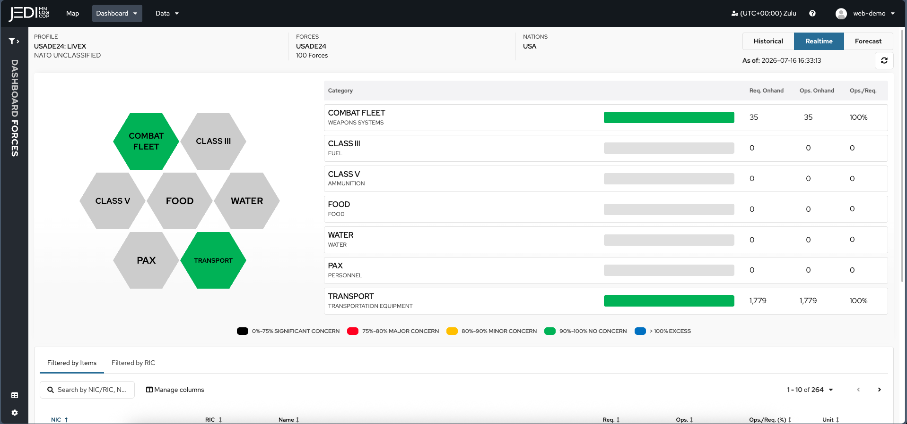
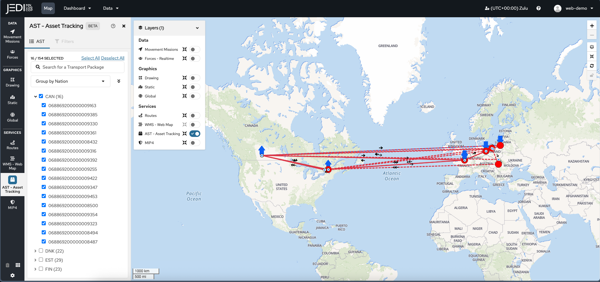
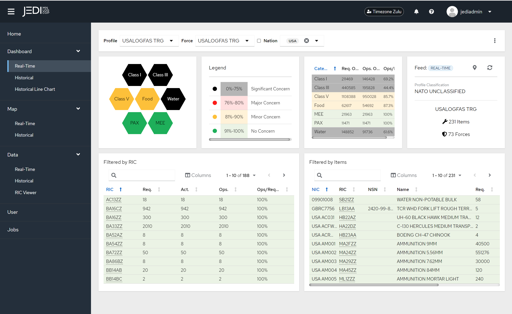
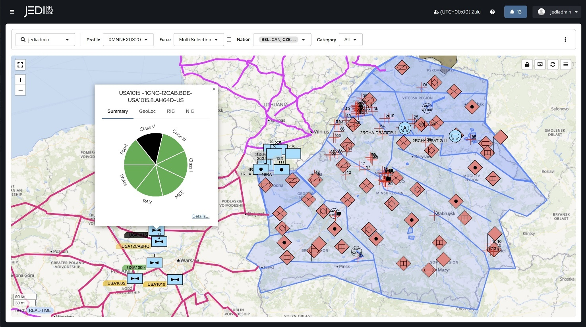

Real-time visibility of mission partners' sustainment resources and combat effectiveness, built for coalition environments where data sharing is constrained. Here's the architecture, the screens, and the full list of what it's built to support.
The JEDI-X Data Platform is the interoperability engine underneath everything else — business rules, data mappings, and translation services, plus the APIs other systems plug into. Designed for machine and human consumption alike.
The Dashboard and Map turn that data into intuitive interfaces, refined over years of feedback captured directly from operations and exercises — built for staffs to analyze, spot issues, and generate courses of action.
Specialists — fuels, transportation, ammunition planners — and briefers building a Commander's Update tailor their own view without touching the underlying data or anyone else's screen.
Historical data becomes trend identification and predictive analytics, so staffs can act on where a unit is headed — not just where it stands right now.
JEDI works with whatever a partner already has — agnostic of existing systems, minimal hardware footprint, running across classified, unclassified, and commercial environments alike, so no coalition partner has to wait on a fielding schedule to get in the picture.
JEDI integrates and automates the flow of data into NATO architecture — so the picture updates itself, everywhere it needs to. Categories like combat fleet, fuel, ammunition, food, water, and transport are tracked side by side, each flagged by a color-coded concern level, so a glance tells you exactly where the gaps are.

JEDI aggregates multiple feeds of data from multiple nations to support your combat effectiveness. The map view plots live asset tracking and movement missions across the theater, filterable by nation, with routes and positions overlaid — so planners can see where equipment and forces actually are without cross-referencing five different systems.

Filter by profile, force, and nation, and the dashboard updates a graphical summary of unit status alongside the key numbers behind it — all under a color-coded legend that flags concern level at a glance. Drill straight down from there into individual line items by RIC (Reportable Item Code) or NIC (National Identification Code), across hundreds of items per nation, live or historical.

During Exercise Shared Horizon 2025, JEDI MNLOGCOP displayed enemy positions and sectors pulled straight from a mission partner's targeting system — proof that, through the JEDI API and a MIP Gateway, systems that were never designed to talk to each other can now exchange data bi-directionally. That same C2 integration extends to the Maven Smart System (MSS), so logistics doesn't sit in a silo apart from the operational picture.

JEDI MNLOGCOP interacts with LOGFAS in the background, so users get the benefit of LOGFAS-structured data without ever needing to train on or knowingly interact with LOGFAS itself. Data can enter the pipeline three ways — pulled automatically from a nation's own authoritative systems, entered directly by soldiers, or exchanged machine-to-machine through JEDI-X's own APIs — and all three come out the other side in the same LOGFAS-compatible format, whether the receiving side runs LOGFAS natively or not. Sync jobs can also be automated and scheduled to periodically retrieve and archive data, giving every user access to historical snapshots for after-action review and trend analysis — not just a live view that disappears the moment the operation ends.
Not a single-purpose tool — this is the full range of what JEDI-X and JEDI MNLOGCOP are built to carry, from first plan to last unit home.
Covers the full mission planning cycle, not just the logistics slice of it — run at exercise scale and at operational scale alike.
Includes Force Closure Visualization: commanders see exactly when a unit will actually be ready, not just where it sits on a manifest.
Pulls from military and commercial transport systems alike, so a shipment doesn't go dark just because it crossed from one system into another.
Built for exactly the kind of distributed, contested environment where ports and fixed infrastructure are limited and vulnerable.
This is how 21st TSC's JEDI Movement Center ran deployment visibility for a recent eastern-flank exercise series — one plan, distributed, not re-typed at every border.
Tracked side by side with a color-coded concern level, so a glance tells a planner exactly where the gaps are forming.
The same map filters by nation and overlays routes and positions, so planners see where things actually are.
Through the JEDI API and a MIP Gateway, systems that were never designed to talk to each other now exchange data bi-directionally.
One screen puts location, supply status, and readiness together, so nobody's cross-referencing three reports to answer one question.
Team JEDI is currently integrating US Army systems of record directly with LOGFAS through JEDI-X and a Foundry data layer — eliminating the "swivel chair" step where someone retypes the same data from one system into another. JEDI-X enforces best practices for that national-to-LOGFAS conversion to keep the data quality high on the way through. Once live, the Maven Smart System will be able to digest, store, and present multinational data natively, and VANTAGE gets the same automated feed alongside every partner's own system of record — without a single manual re-entry step.
JEDI is a complete package, not just an IT solution. It's agnostic of whatever logistics systems or technology a partner already has, and it accommodates every level of available technology so an operation doesn't stall out waiting for the least-equipped partner to catch up. It deploys rapidly with a minimal hardware footprint, and it runs across classified, unclassified, and commercial environments alike — so you can fight tonight, not in five years. One computer screen puts locations, supply parts, and readiness in view, so you always know where your stuff is. And because the picture stays live instead of static, it's what enables the shift from a Recognized Logistics Picture (RLP) — what happened — to a Recognized Logistics Forecast (RLF) — what's about to.
Any data. Any way. Any time.
See the real commands and programs already using JEDI in the field.
See who uses it →